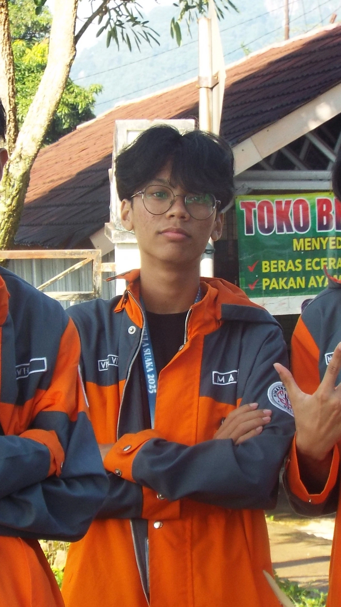
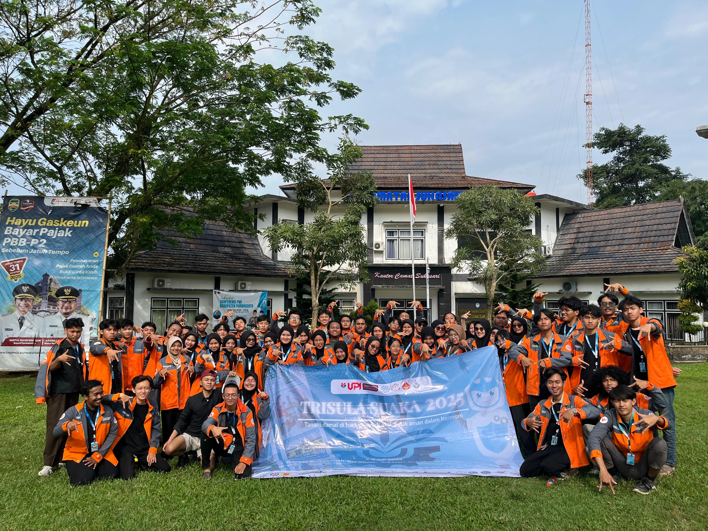
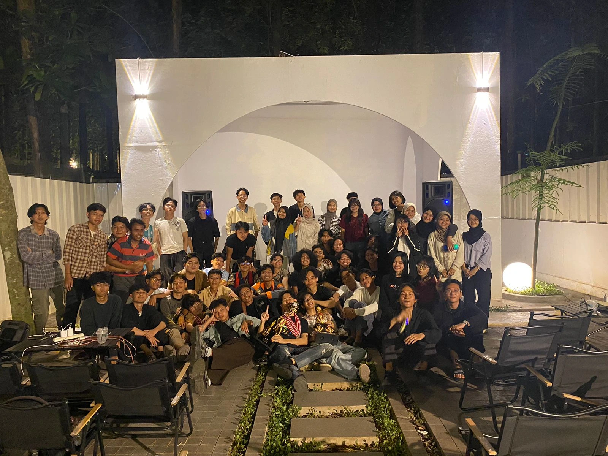
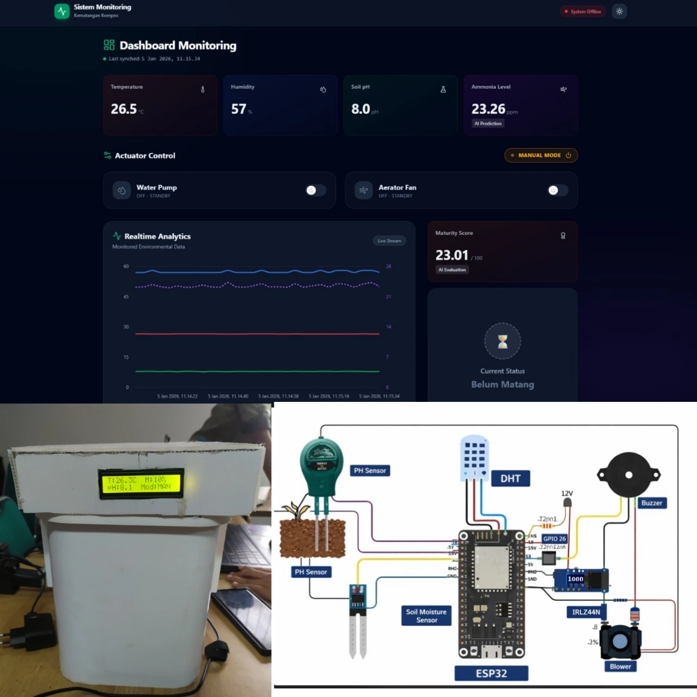
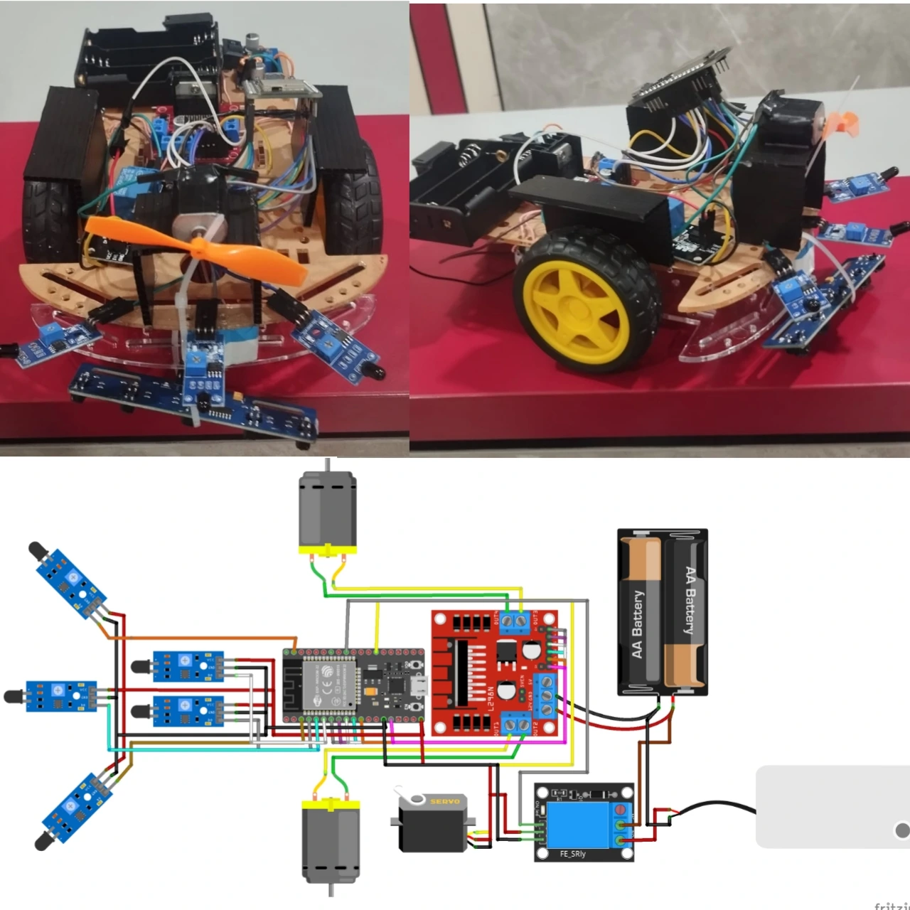
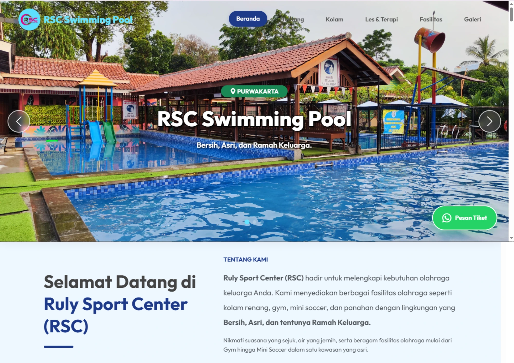
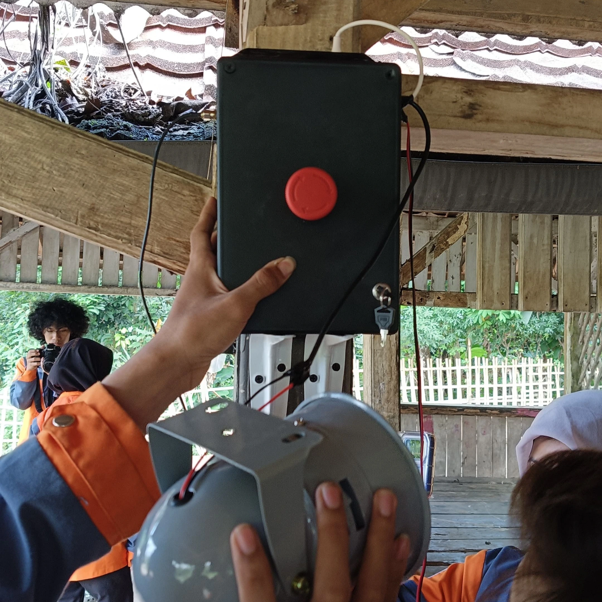
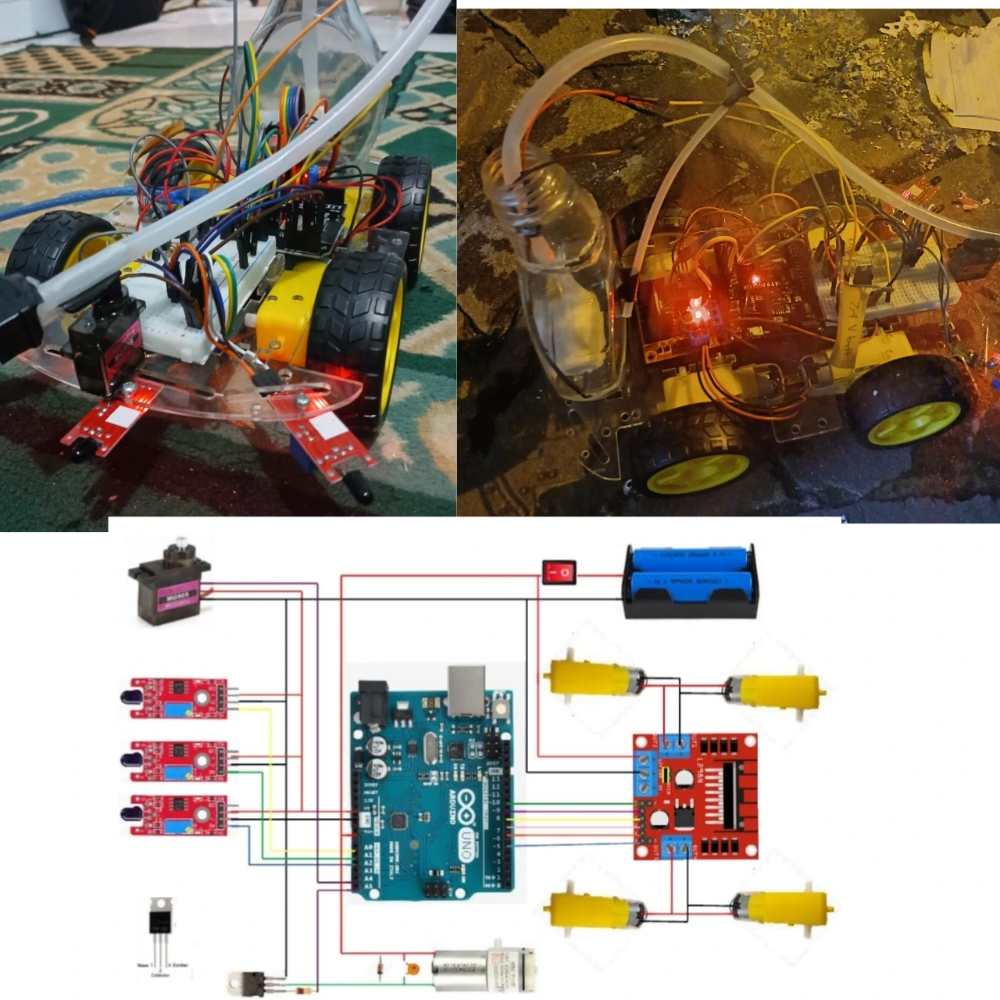
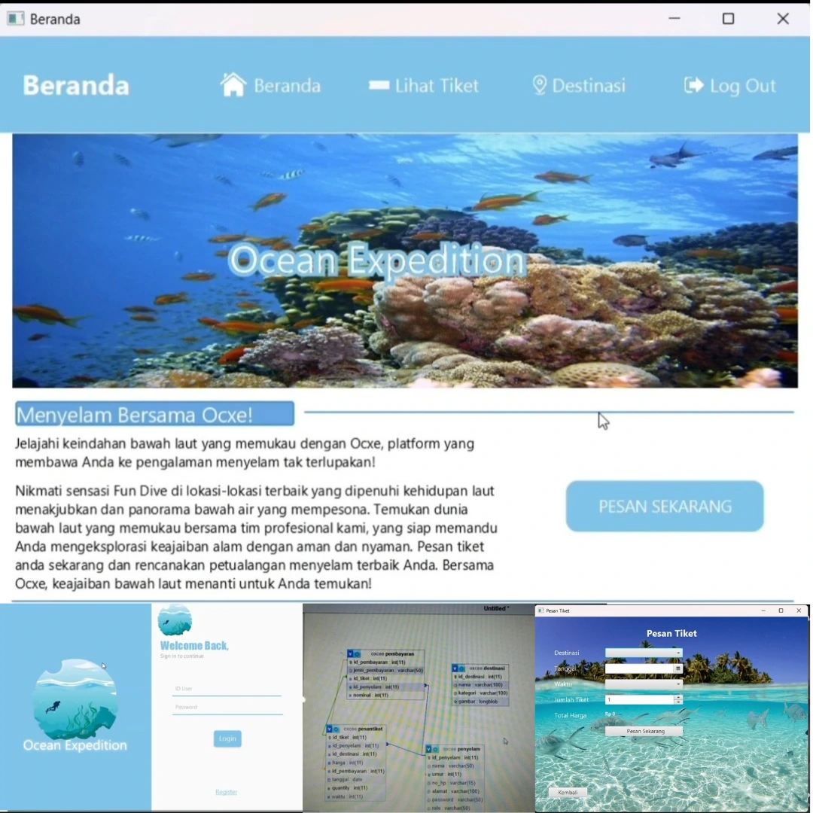

Spesialisasi dalam pembangunan sistem IoT end-to-end, robotika, Machine Learning. Menggabungkan integrasi hardware dan software untuk solusi cerdas.

Halo! Saya adalah mahasiswa Mekatronika dan Kecerdasan Buatan di Universitas Pendidikan Indonesia dengan passion kuat dalam menjembatani dunia perangkat keras dan perangkat lunak.
Fokus utama saya adalah menciptakan sistem cerdas yang tidak hanya berjalan di komputer, tetapi berinteraksi dengan dunia fisik. Saya memiliki pengalaman mendalam dalam merancang arsitektur IoT (Internet of Things) yang terintegrasi dengan model Machine Learning untuk solusi yang efisien dan otonom.

Trisula Suaka 2025

Rayakarya UPI Purwakarta

Sistem Monitoring kompos cerdas menggunakan ESP32 dengan prediksi kematangan via Machine Learning.

Sistem Pengikut Garis Pemadam Api Otomatis Berbasis Computer Vision (OpenCV) & IoT (MQTT).

Website profil perusahaan responsif dan informatif menggunakan framework Bootstrap 5.

Sistem keamanan off-grid berbasis IoT, menggunakan LoRa, dan manajemen daya panel surya mandiri.

Robot pemadam api otomatis menggunakan sensor api, mempunyai kendali manual melalui dashboard & WiFi

Aplikasi desktop reservasi tiket menyelam berbasis Java OOP dan integrasi Database.